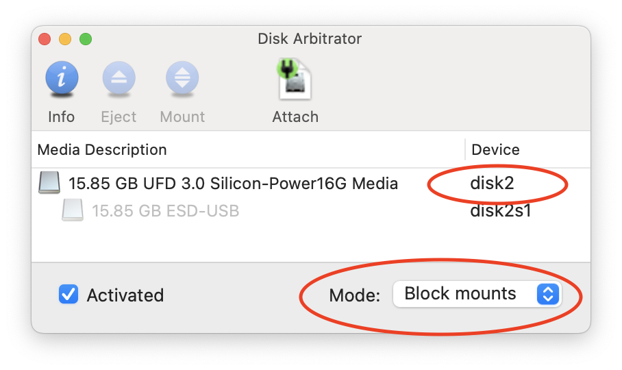

Boot from USB flash drive in VirtualBox MacOS
Imagine you have a bootable flash drive and you want to test it (try to boot from it). For example, we will boot from Windows 11 bootable USB flash drive. I will show you how to do this under MacOS using VirtualBox.
Step 0: plug in USB drive
We need a/dev/disk<number> file related to our drive.
But MacOS will also automatically mount any USB drive to /Volumes/ folder. We don't want that.
The USB drive shouldn't be mounted. You could eject the drive in Finder but it also deletes the
/dev/disk<number> file.
Thus we need some third-party app that prevents USB drives from mounting.
We will use an open-source app called Disk Arbitrator (Github).
We open the app and plug-in our drive:

On this screenshot we see the mode ("Block mounts") and the dev file (/dev/disk<number>).
Step 1: create VMDK linked to /dev/disk<number>
VirtualBox doesn't provide the ability to use a USB drive explicitly for booting.
Instead, we will create a VMDK image which will be linked to the dev file of our USB
drive /dev/disk<number>:
sudo VBoxManage internalcommands createrawvmdk -filename ./usb.vmdk -rawdisk /dev/disk<number>
sudo chmod 777 ./usb.vmdk
sudo chmod 777 /dev/disk2
Step 2: Create a virtual machine
Now we need to create a virtual machine and use this VMDK image:
Start our virtual machine: